Disclaimer: I am not (yet) a fitness guru and do not own academic qualifications in that field. I still have things to learn. I am sharing with you the excellent advice that worked for me. The pictures are not of the highest quality but are not Photoshopped.
I would like to start with a short statement: I am in my early thirties and I am stronger now than I have ever been in my life. I have to say that it feels great to say it.
I am fairly happy with my general shape even if some areas need to be improved. So let me share with you the good decisions that improved my life.
1. Getting my goals in order
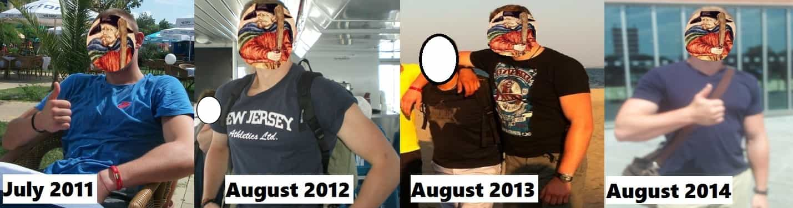
FAR LEFT: Martial arts only training, terrible diet. LEFT: Incorporated more calisthenics but diet still poor. RIGHT: Reasonable diet plus early stages of weight training. FAR RIGHT: Discovered ROK on the 18th of June, 2014. Good diet, gym, and swimming training immediately followed.
Ever since I read Douglas Heppner’s concise, thought-provoking article Could You Defeat A Past Version Of Yourself?, I now ask myself regularly that question, analyse which areas need improvement, and then get to work.
My 2010s self had more overall stamina and technique, but I am convinced that my present self would smash him being thirty pounds heavier and using the experience accumulated and the brute force of heavier striking.
My main issue: I hit puberty late but sprouted fast. My limbs stretched but the muscle mass did not follow. I grew up tall and slim (just under 6’2″/188cm) into adulthood even with hardcore training. With that ectomorph body type, I had problems putting on muscle. Even now with decent training and nutrition, growing muscle takes a long time.
What I want is a functional physique that allows me to strike hard and grapple effectively. Looking good is one thing but I do not aim at the “sick cow on steroids” bodybuilding type.
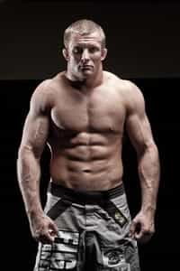
The body type I am aiming at.
Find out exactly what you want to do, organise, and execute. No more “kinda” or “sorta”. Regularity pays more than going balls out a few times then slacking off.
For instance, I have four goals now: gaining five to ten pounds of muscle in the next year, improving my cardio (not satisfied now), sleep better, and fix my recurrent “close to chicken legs” issue. It is going well lately but there is still some work ahead.
2. Finding inspiration
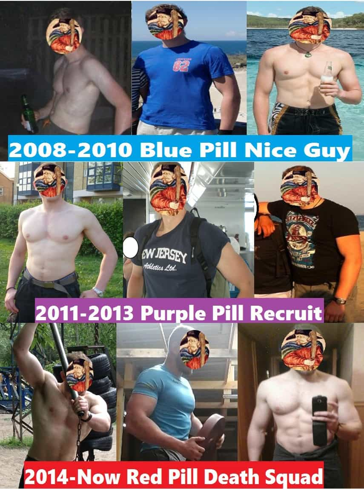
I like the expression of “standing on the shoulders of giants”. For me, Return Of Kings was a great source of inspiration and I must thank all the contributors and my peers who accompanied me in this journey.
You must train with the best to be among the best. You must look for failure, train with sportsmen stronger than you, hurt your ego with defeat, and use the fire of adversity to forge your mind and body. Persist despite setbacks, illness, or injury.
The motivation and hard truth of the “never enough” motto should always ring in your head. I met my martial arts coach after a year of absence and only gym training. I was in top shape but he dropped the truth bomb that woke me up…
This is cool for the girls and all, but you lost a year of technique.
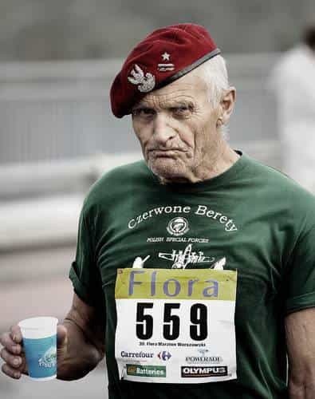
Always look for excellence and be inspired by real life examples. I had the privilege to train sambo with some Continental and World champions. The vibe and positive impact of those encounters were priceless.
If no live inspiration is available, excellent books, documentaries or even Youtube channels exist to get you inspired. I am in a cycle of scooby1971, Jeff Cavaliere’s Athlean X and Elliott Hulse’s Strength Camp at the moment.
3. Avoiding alcohol and cigarettes
I never smoked in my life but started a year ago in Eastern Europe as it is so cheap, very social, and a decent opener. But that garbage lowers testosterone and stamina. I was not a big smoker but could go through half a pack if I got smashed. Cigarettes also worsen the hangover. I’ve since almost entirely stopped.
I also had too many hangovers spent hiding in my hole like a spider, cursing the world when I could have been productive in various areas of my life or gone to the gym.
I used to drink plenty of beer before I read about its negative effect on testosterone. I now rarely drink it. I drink much less in general and choose spirits when I go out.
But I do not live like a monk and had good results lately as I found an old, rusty gym with no girls, and I currently drink around three alcoholic beverages a week tops. I also have a good sleeping rhythm at the moment.
I cannot speak for the effect of other drugs as I have never had any experience with it.
4. Focusing on nutrition as much as training
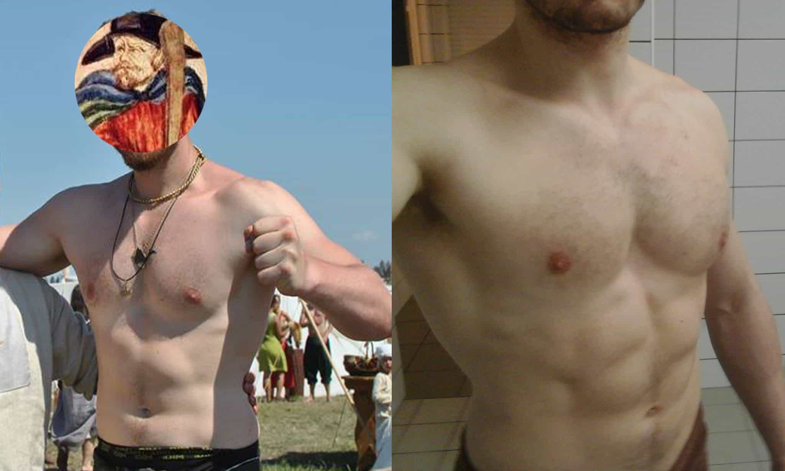
Left: August 2015, after a summer full of delicious carb-rich food and gallons of beer. Right: March 2016, after two months of 90% carbs cut down (same training).
I started cutting down on carbs (especially bread, potatoes and pasta) for a year now. I find it effective for fat loss but I miss it a lot (I still have oats in the morning or wild rice with my meat).
I started drinking more water (about half a gallon a day) and reduced my consumption of salt. It was difficult for me as my two favourite dishes are herring in oil with steamed potatoes and Polish pickled cucumbers. I also cut entirely on raffinated sugar (in my coffee too) and only eat fruit occasionally but compensate with vegetables.
Too much cardio does not help being lean without the proper diet. I made the mistake of thinking that I could be lean by running four times a week while stuffing my face with everything I could put my hands on.
I eliminated dairy too following the few articles I read about milk being full of estrogens, after drinking it in great amounts all my life. Another determining factor was Arnold’s quote from Pumping Iron.
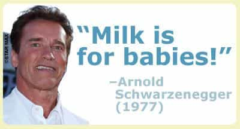
A good tip that helps me not to eat all that delicious food is to do my groceries on a full stomach. Worst mistake is to buy the week’s supply while starving after a gym session. You just want to rob the store and eat off the shelves. You will probably give in and buy something you should not eat like processed meat, puff pastries, or truckloads of sauce.
5. Choosing quality over quantity
My personal experience of the impact of a poor diet comes from my student days. I had 2-3 hours long martial art sessions three times a week plus 45 minutes jogs here and there.
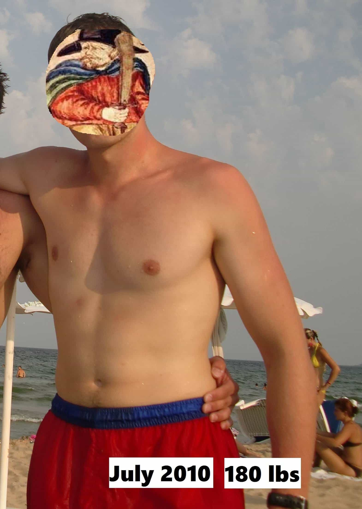
In the above picture, I reached national level in my discipline (bronze medal) in individual and silver medal in team contest. Technique and excellent teachers made up for my average condition.
I ate what I wanted but mainly entire saucepans of potatoes or pasta with cream, cheese or sauce, bread of the lowest quality and processed meat. I only ate real meat when I was visiting my family or coming back to uni with my bags full of ham and chicken.
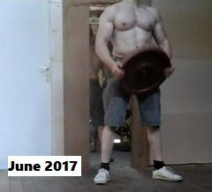
My diet and my financial situation where both dirt poor. I now have a better physique even if I train less and can afford a better diet than when I was a student.
The quality of the meat you ingest makes a huge difference. I met back home a farmer that had enough of being fucked over by slaughter houses and the European directives. He eliminated the middle man by raising his top quality cows, slaughters them himself and has clients (including me) on a private email list. He notifies us when the meat is ready.
I turn up and buy two weeks to a month worth of meat. I rarely had something tastier and it had the triple effect of being cheaper and tastier while keeping my money away from the thieves that run modern supermarkets.
6. Becoming more time efficient
One of the great ideas that I need to re-institute in my life is the habit of cooking all my meals of the week on Sunday and defrost them. It is a game changer and saves so much time. It goes lighting fast if you get a George Foreman grill and a steam cooker.
I also plan my workouts before arriving at the gym now and time my sets while turning off the Internet on my phone or leaving it in my bag not to be bothered.
7. Experimenting and retaining what works
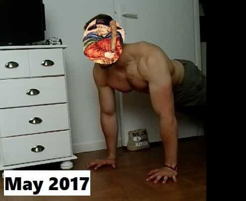
I like my present routine of weight training, calisthenics and MMA
I remember which activities improved specific areas of my body and continue to extract what is effective. For instance, rugby was great for bulking up with frequent, fast runs combined while tackles improved resistance and core strength. My legs soon doubled in volume but I was around 20% body fat from constant hunger and after-game beers.
Boxing was excellent for cardio. I got very lean but for a long-limbed guy like me, boxing alone can’t give me the muscle mass I want.
Calisthenics, wrestling, and weight training should be done outdoors whenever it is possible. There should also be half an hour of walking in your daily routine.
I recently observed the positive effect of hot climate and walking more than thirty minutes a day. I spent a month in South America last winter, training less but walking everyday often more than half an hour.
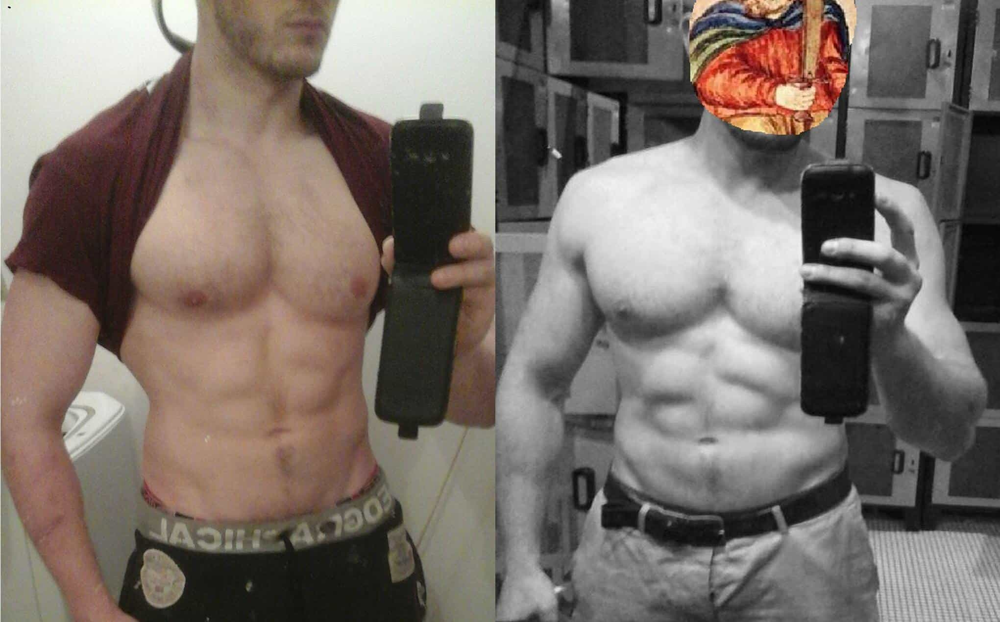
Left: Summer 2016. Right: Dec. 2016, post-South America. Flexing a bit in those images but definitely leaner. My diet was not better as I had only two meals a day (late morning & late afternoon) and long hours of fasting in between.
I focus now much more on form than reps during workouts. Improving body posture at all times also did wonders with my overall state of fitness while strengthening my core and the muscles of my back.
8. Focusing on better sleep and recovery cycles

I started lifting weights four years ago after I moved overseas. I had crazy days: waking up at 4.45AM, 90 minutes of overpriced commuting, slaving all day until 6PM, hitting the gym everyday for almost 2 hours without a plan or writing anything down, 90 minutes of more overpriced commuting, cooking a meal that often involved cheap sausage or processed food then stuffing myself to the brim before collapsing in bed around 23.30.
Then I proceeded to destroy my gains with two consecutive days of drunkenness and being hungover on Sunday. While I trained like a madman, I could not see progress.
I get better results now with around three gym sessions (less than an hour) a week, plenty of recuperation and good cycles of sleep.
I also see recovery in a radically different perspective now. A large majority of injuries in sport are sustained after going too hard after a long period of inactivity. I pace myself a lot more now when I come back from a break.
Baby steps, lads, baby steps. No point going hardcore if you are unavailable the next three weeks because of an injury and have to restart from square one.
9. Going easy on supplements
The only supplements I use now are a scoop of whey protein isolate with water after each workout, a spoon of cider vinegar a day and vitamin D (double the dose in winter).
I have never used anything else that could involve pills or needles and do not intend to. It’s maybe because I grew up on a farm that I don’t like what is synthetic. I have only been using protein powder for 9 months now and it took me years of thought and long talks with doctors and fitness people before finally experimenting with it.
I am following a diet close to keto after I saw a few of our authors and other fitness articles praising it. I am quite generous in meat quantities but should measure it. I need to get my macros in order.
I also want to try intermittent fasting and observe the effects of flaxseed and fish oil.
10. Keeping track of everything
I log all of my workouts in a notebook. I used to improvise and randomly choose weights and reps, but workouts need to be organised just like life. I now work out faster and more efficiently using sets and weights that always follow the three laws of getting bigger and leaner.
I have followed this method for the last year and a half and can observe progress or decline during any given period. Now I can go back in time, compare pictures, workouts and see which training and diet combinations were the most efficient.
Devenir plus fort pour pouvoir vivre en paix
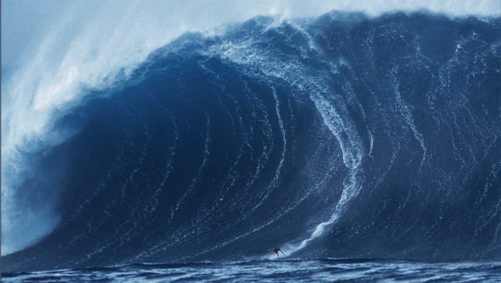
I consider that I would have no right to contribute on Return Of Kings if I did not look the part. This article is my way to show you that what you read here works and give back to those who distributed their precious knowledge.
I detailed here what worked for me. Perfection is not reached and the journey is still long. These tips are highly likely to have the same effect on anyone who is committed.
Read More: 7 Tips On How To Get In The Best Shape Of Your Life


{kind=link}
{kind=link}
{kind=link}